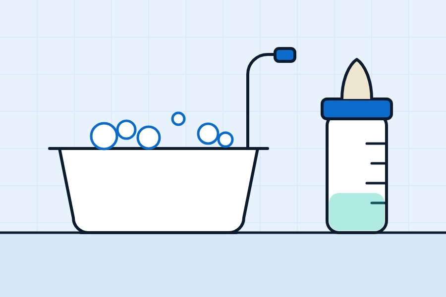

Nesting season looks much the same in most households. The cot's built, the car seat's in, and someone's googling "do we need a water softener for the baby?" at midnight. It's a good question, and the honest answer is: you don't need one, but if you have one, or you're thinking about getting one, there are a few things to get right.
A quick word before we start. We're water engineers, not midwives or doctors. For anything about your baby's health, feeding or skin, your midwife, health visitor, GP or the NHS website is the place to go. What we can help with is the water side of things.
Formula and softened water: the one rule
If you'll be using formula, this is the bit that matters most. NHS guidance on making up baby formula says not to use artificially softened water. Softening adds sodium to the water, and that isn't what you want in a baby's feed.
The NHS also says to use freshly boiled drinking water from the tap, left to cool for no more than 30 minutes so it's still at 70C or above, and that bottled water isn't usually recommended for making up feeds. Follow the full step-by-step NHS guide, as there's more to it than the water.
In practice, that means:
- If you have a softener, make sure you've got a separate unsoftened drinking tap, and fill the kettle from that one, every time. Everyone in the house needs to know which tap is which, including grandparents and anyone helping out in those blurry first weeks.
- If you're getting a softener, we fit a hard drinking tap with every installation as standard.
- If you've inherited a softener and aren't sure how the kitchen's plumbed, test it. A hardness test strip on the drinking tap should show hard water. If it reads soft, don't use it for feeds until it's sorted.
There's more on how softening adds sodium in our post can you drink softened water?
Bath time
This is where people most often notice a difference. In hard water, soap and baby wash react with the minerals and leave a bit of residue, and you'll see a scummy ring round the baby bath. In softened water, products lather easily and rinse away more cleanly, and plenty of parents simply find it nicer.
That's a comfort thing, not a health claim. If your baby has dry skin or eczema, speak to your health visitor or GP about what to use and how to bath them. We've written an honest look at soft water and eczema, including what the research does and doesn't show. The short version: there's no good evidence that a softener treats eczema, though some families find it more comfortable.
The NHS website has clear advice on washing and bathing newborns, including water temperature and what (if anything) to add to the water. It's worth reading whatever your water's like.
Bottles, sterilisers and prep machines
Babies come with a surprising amount of kit that heats water, and in a hard-water home, all of it scales up:
- Kettles will be on more than ever. Descale regularly, using whatever method the manufacturer recommends, and rinse well afterwards.
- Steam sterilisers build up a white crust on the heating plate. Most manuals tell you how to descale them, and many say what water to use. Follow that.
- Formula prep machines have their own instructions on which water to use, filter changes and descaling. Stick to them, and don't fill them from a softened tap unless the manufacturer specifically says it's fine.
- Bottles and teats can get a cloudy film in hard water. A good wash and rinse usually sorts it.
The washing mountain
Nobody warns you about the laundry. Muslins, vests, sleepsuits, bedding, your own clothes after a feed goes wrong. Hard water makes detergent less effective, so you tend to use more, and towels and cloths can dry stiff.
With softened water you'll typically need less detergent to get the same result, and fabrics often feel softer. If anyone in the house has sensitive skin, an extra rinse cycle can help get detergent residue out, hard water or not.
Should you get a softener before the baby arrives?
It's entirely up to you. A softener isn't baby equipment, and loads of babies are raised perfectly happily in hard-water homes. If you were already thinking about one for the usual reasons (limescale, cleaning, protecting the boiler), the run-up to a new arrival can be a sensible time, because you're unlikely to want engineers in the house in the first few weeks.
If you do go ahead, a few tips:
- Don't leave it until the last minute. Aim to have it fitted well before your due date, so there's time to settle in.
- Make sure the drinking tap is somewhere convenient for filling the kettle, since you'll be using it a lot.
- Get shown the basics: the bypass, topping up the salt, and which tap is which.
Our installation page explains how a typical install works. If you're not sure how hard your water is, start with our postcode checker (an approximate guide, so check with your supplier for exact figures) or read how to check if your area has hard water.
Already got a softener? Now's a good moment to book a service so it's running properly before life gets busy.
Quick answers
Can I use softened water to make up baby formula?
No. NHS guidance says not to use artificially softened water for making up formula. Use freshly boiled water from an unsoftened drinking tap and follow the full NHS instructions.
Is softened water OK for bathing a baby?
Many families bath babies in softened water and find it lathers and rinses more easily. It isn't a treatment for any skin condition, so speak to your health visitor or GP about your baby's skin.
Do I need a water softener for a new baby?
No. It's a personal choice. Some families like softened water for bathing and laundry, but babies are raised happily in hard-water homes too.
Want a hand with your water?
Book a free survey and water test. We'll tell you straight whether a softener's worth it for your home.
Get a free quote